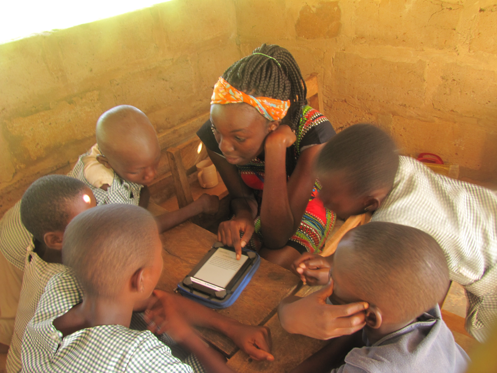
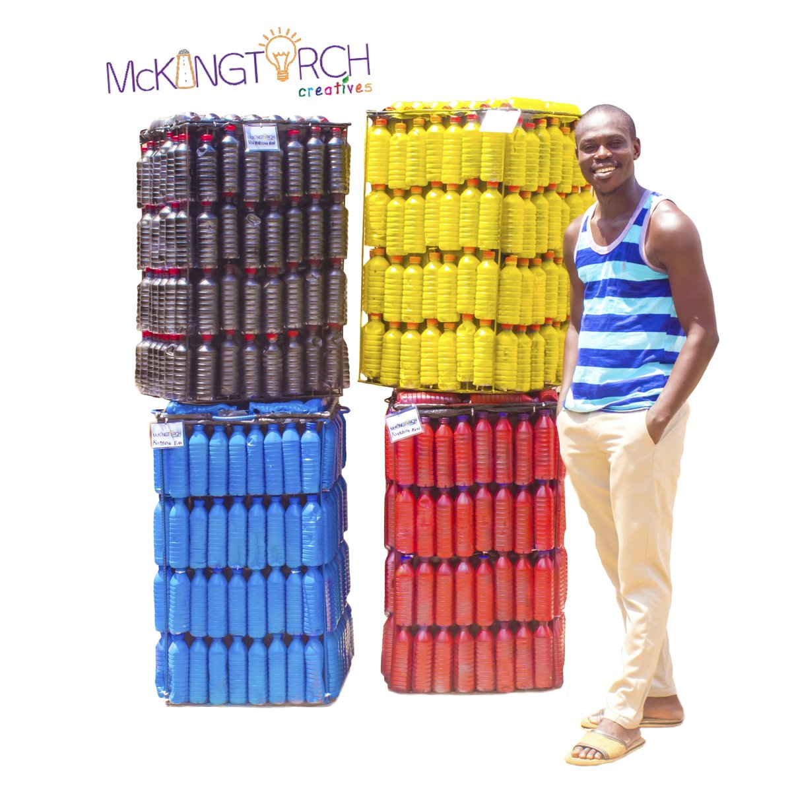
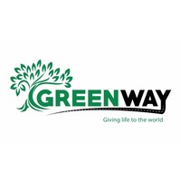

Young At Heart Ghana
Young At Heart Ghana is a non-profit that is championing the use of digital platforms to create exciting learning experiences for youth and children. In world where technology is revolutionalizing the way we learn, work, play and relax, Y@H focuses on providing children and youth especially those in deprived/under-served areas, with digital literacy while inculcationg in them, a culture of creativity and design thinking.
Mckingtorch Creatives
Half of all the fruit and vegetables produced there are thrown away, even though millions of people across the continent are going hungry. According to the UN, , if food wasted in Africa was saved instead, it could feed about 300 million people.Entrepreneur Nnaemeka Ikegwuonu, 35, is hoping his innovation will address the problem in his country, Nigeria.
Greenway International
Greenway International Foundation adopt tree planting, plastic waste management, climate and energy literacy as a solution to ending environmental crisis we face in the world today. We are committed to addressing the intersection of climate and economic, social and racial disparities and working closely with partners who understand this interface. Climate change and energy literacy education as part of our program outline, we believe partnership with various like minded institution will play a crucial role in the implementation and achievement of our set goal of 100% clean energy and 90% greenhouse gas emission reductions by 2050 at the latest. One such challenge is our goal of planting 2 million trees before 2050.